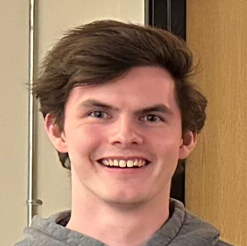
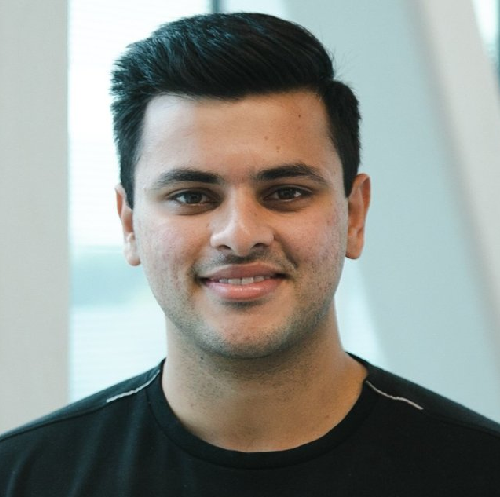
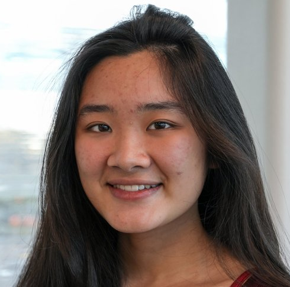
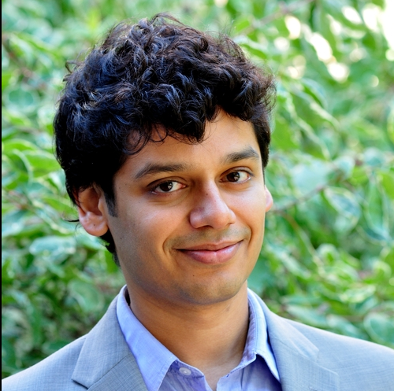
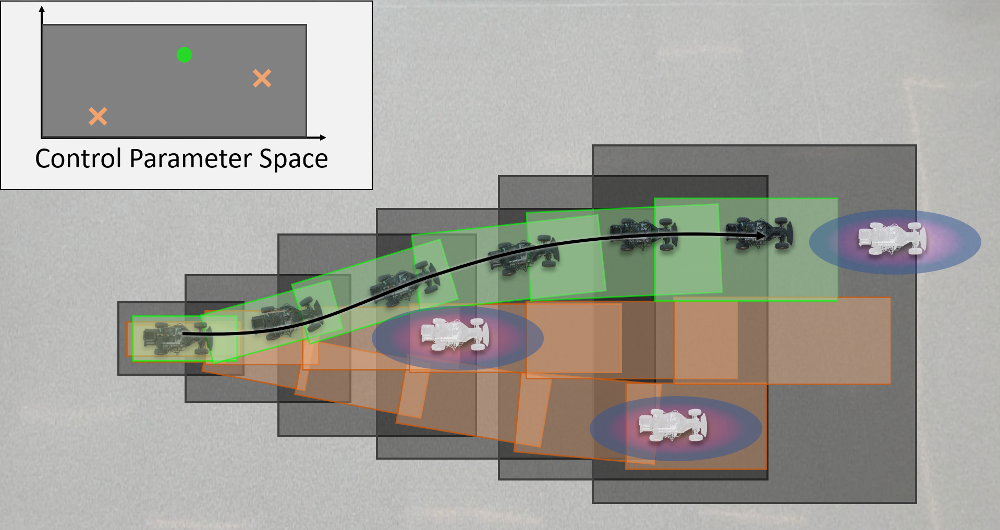
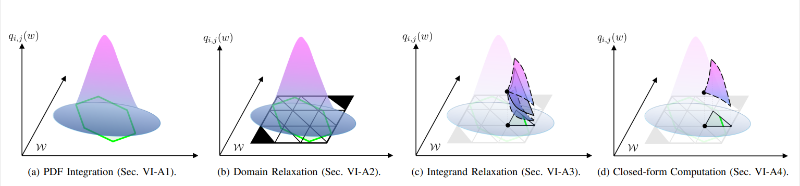

Risk-Aware, real-time trajectory Design In Uncertain Scenarios
A Real-Time Reachability-based Motion Planning Algorithm for Risk-Aware Motion Planning in Uncertain Environments.
RSS 2023




Jinsun Liu*
Challen Enninful Adu*
Lucas Lymburner
Vishrut Kaushik
Lena Trang
Ram Vasudevan
jinsunl@umich.edu
enninful@umich.edu
llymburn@umich.edu
vishrutk@umich.edu
ltrang@umich.edu
ramv@umich.edu
* Equal Contribution
All authors affiliated with the Robotics Department and the Department of Mechanical Engineering of the University of Michigan, Ann Arbor.
Paper
</Code>
RADIUS generates real-time, motion plans that guarantee robot safety up to a given risk threshold in the presence of uncertainty of obstacle motions.
Abstract
Deterministic methods for motion planning guarantee safety amidst uncertainty in obstacle locations by trying to restrict the robot from operating in any possible location that an obstacle could be in which is overly conservative.
Chance-constrained optimization can be applied to improve the performance of motion planning algorithms by allowing for a user-specified amount of bounded constraint violation.
However, state-of-the-art methods either rely on moment-based inequalities, which can be overly conservative, cannot run in real-time, or make it difficult to satisfy assumptions about the class of probability distributions used to model uncertainty.
To address these challenges, this work proposes a real-time, risk-aware reachability based motion planning framework called RADIUS.
RADIUS performs real-time optimization to construct a trajectory that can be followed by the robot in a manner that is certified to have a risk of collision that is less than or equal to a user-specified threshold.
This is done without restricting the probability distribution used to model uncertainty to a simple class (e.g., Gaussian).
The proposed algorithm is compared to several state-of-the-art chance-constrained and deterministic methods in simulation, and is shown to consistently outperform them in a variety of driving scenarios and is demonstrated to work on hardware.
Method

RADIUS first performs offline reachability analysis using a closed-loop full-order vehicle dynamics to construct a series of control-parameterized, zonotope reachable sets (shown as dark gray boxes) that over-approximate all possible behaviors of the ego vehicle over the planning horizon.
During online planning, given some user-defined risk of collision (ϵ) for the motion plan, RADIUS constructs a trajectory by solving an optimization problem that selects subsets of pre-computed zonotope reachable sets that are certified to have a no greater than ϵ risk of colliding with any obstacles.
In the image above, the moving obstacles shown in white and the 3-σ regions of the corresponding probability distributions for the obstacle locations are shown as the purple and blue ellipses where the probability density from low to high is illustrated from blue to purple.
The subsets of the dark gray zonotope reachable sets corresponding to the trajectory parameter shown in green ensures a collision-free path that is guaranteed to have a no greater than ϵ risk of colliding with all obstacles, while the two trajectory parameters and their corresponding reachable sets shown orange may have a greater than ϵ risk of collision with the moving obstacles.

The key to being able to solve this optimization in real-time is the closed-form over-approximation of the risk of collision, which allows us to provide analytical gradients to the optimization.
From left-to-right the process to obtain this closed-form over-approximation is as follows: a) we first represent our risk of collision as an integral of a Probability Density Function (PDF) of the obstacle location over the ego vehicle reachable set;
b) next we generate a grid of simplices to over-approximate the integration domain;
c) next we over-approximate the PDF using a 2nd order Taylor expansion and interval arithmetic;
d) with the resulting integral of a quadratic polynomial over a set of simplices we are able to compute a closed-form solution to this integral that tightly over-approximates the actual risk of collision.
Note that this process is parallelizable and an algorithm for parallelization is provided in the paper.
Results
RADIUS is compared to a variety of state-of-the-art algorithms, and is shown to outperform them in a variety of driving scenarios.
3-Lane Highway Simulations
RADIUS is compared to REFINE, CCPBA and Cantelli MPC in a 1000m long, 3-lane highway simulation where the goal is to be able to navgate through the dense traffic and reach the end of the highway.
Each of the algorithms has the level of risk it is allowed to drive with set to a maximum of 5% (ϵ = 0.05) risk of collision for each planning iteration.
As REFINE is a deterministic motion planning algorithm, it does not have an associated risk level, and tries to drive while ensure that there is no chance of collisions.
This leads to the conservative behavior seen below.
RADIUS is able ot outperform all of these methods and reach the end of the highway while all the other methods are unabel to do so due to the dense traffic on the highway.
Left Turning experiments
Executing unguarded left turns requires the autonomous agent to be able to navigate through tight gaps in oncoming traffic.
Being conservative in these environments often cause autonomous vehicles to spend long periods waiting at the intersection unable to navigate through.
Below we see RADIUS navigating through this intersection at various risk levels (ϵ).
Notice that RADIUS is more aggressive at higher risk thresholds allowing it to execute the left turn earlier, whereas at lower risk thresholds it chooses to be more conservative and wait longer.
Hardware Lane Change Experiments
Below we see RADIUS on a F1/10th TRAXXAS RC platform attempting to execute an overtaking manuever at different risk thresholds (ϵ).
Notice that at higher risk thresholds the vehicle succesfully executes the overtaking manuever, whereas at smaller thresholds it chooses to just stay in lane.
Hardware Collision avoidance
Below we see RADIUS on a F1/10th TRAXXAS RC platform executing manuevers to avoid an adversarial agent that drives into the ego vehicle path at various risk thresholds (ϵ).
Notice that at higher risk thresholds the vehicle executes an aggresive lane change to avoid the vehicle, whereas at smaller thresholds it executes a failsafe stopping maneuver to avoid collision.
@article{9792203,
author={Jinsun Liu and Challen Enninful Adu and Lucas Lymburner and Vishrut Kaushik and Lena Trang and Ram Vasudevan},
journal={Robotics, Science and Systems 2023},
title={RADIUS: Risk-Aware, Real-Time, Reachability-Based Motion Planning},
year={2023},
doi={https://doi.org/10.48550/arXiv.2302.07933}}